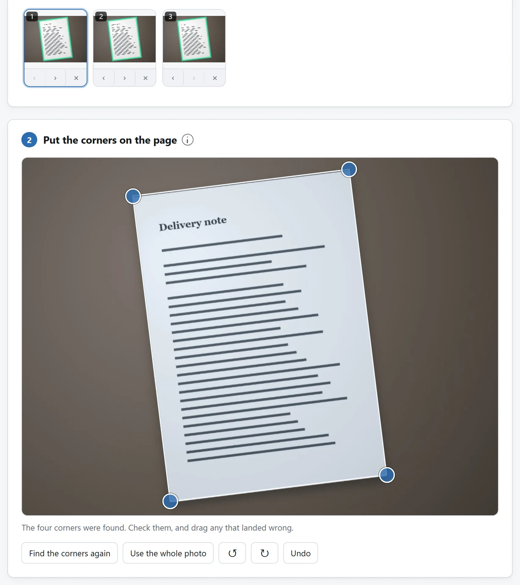
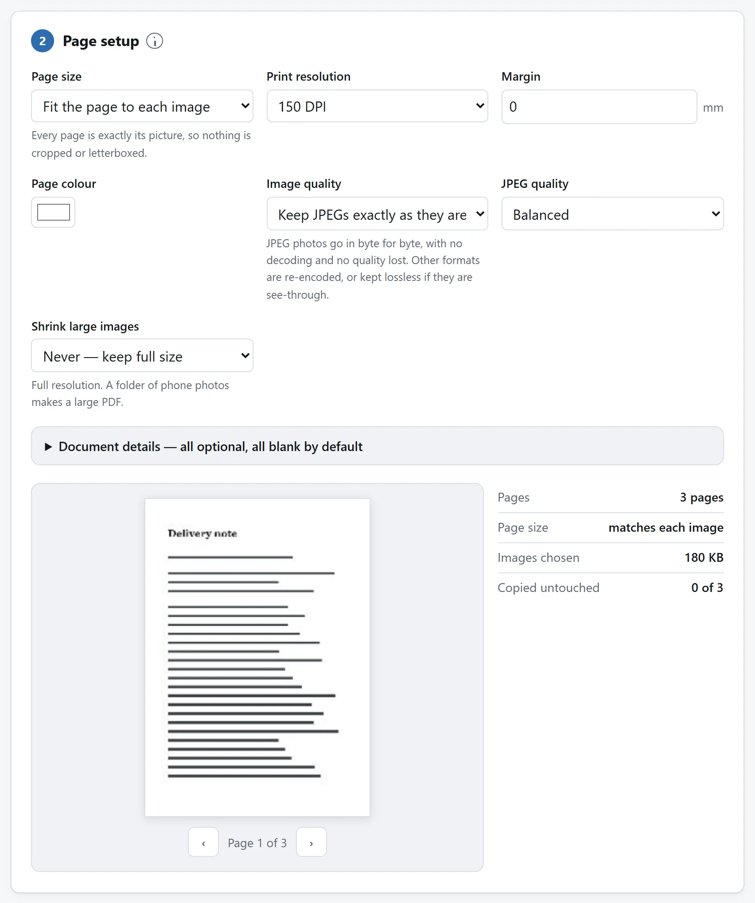

简短的答案
每页拍一张照，然后把所有照片一次性丢到文档扫描器上。它找出每页的四角，把每张照片扶正，写出一张照片一页的一个 PDF——没有单独的合并步骤要做，页面按你添加的顺序排好。
扫描器停下的地方，有两个工具接手。如果文档的一部分本来就是 PDF——邮件发来的合同，中间要夹上你刚扫的签字页——就用 PDF 合并器把它们穿插到一起。要是成品还是比邮箱允许的大，PDF 压缩器能把它压到限制以下。
两处接力都只隔一次点击：扫描器写好 PDF 后，下载按钮下方就有一行提议把结果直接带到合并工具或压缩工具，到那边已经装好——合并工具也会用同样的方式把自己的成品交给压缩工具。
这条链上没有任何环节上传任何东西。这一点在这里比几乎任何地方都要紧：被扫描的是合同、证件和病历，而干这活的常见应用把每一页都过一遍它们的服务器。
按清单组材料包
学校提交或签字申请先数所需页，背面有字也计。一面一拍，按清单加入，用条带箭头改序。逐页查角，选能留最淡字和重要颜色的清理模式。导出后逐页对清单；页数对仍可能重复或缺背面。
保修或客服材料可把纸收据、服务笔记与现有购买确认 PDF 合并。先扫纸，再合 PDF，查编号顺序，有大小限额才压缩。原件保留。扫描器不加可搜索文字，不导入已有 PDF 页，后者交合并器。
把照片拍对
扫描器能救回来的多得惊人——斜着拍的、台灯照得不匀的、页面上横着一道影子的——但相机压根没拍到的，它救不回来。三个习惯就能覆盖大半：
- 填满画面，但每条边外都留一圈看得见的桌面。四角是靠把页面和背景区分开找到的；跑出照片的页面没有角可找。
- 从正上方拍，大致垂直。透视能纠正，但斜拍时远端那条边像素本来就少，纠正变不出像素来。
- 一张照片一页，按阅读顺序。事后调顺序也行，但拍摄的顺序就是拿到的顺序，按顺序拍不花一分钱。
其余的在扫描指南里：四角是怎么找的，什么时候该自己拖，黑白模式对文件体积做了什么。

合并器什么时候有它的位置
扫描器合并的是照片。合并器合并的是 PDF——而一桩真差事的中间常常两样都有：刚拍的签字页，要进一份以文件形式到来的文档。先扫你的页面，然后把扫描件和原 PDF 一起丢进合并器，把页面拖到该在的位置，导出一份文档。原件的书签和内部链接会照着留下来的页面重建，填好的表单字段也一起带过来。
不同日子扫的件也一样：每次扫出的 PDF 作为一块页面落进来，块变成一个文件的地方就是合并器。

压到体积限制以下
先试便宜的那根杠杆，它就在扫描器里：对纸上是墨的页面——文字、表格、收据——黑白模式把每页存成每像素一比特，PDF 通常一页远不到一兆，什么都不用压。彩色只有在颜色真有含义的地方才配得上它的开销。
文件还是发不出去时——彩页，或者合并时收进了别人扫的件——压缩器先给你看体积到底待在哪里，然后按页面实际显示的分辨率重新编码页面图像。它还会在把结果递给你之前确认它打得开——文件是一份有期限的合同时，这一条格外让人安心。
如果你每周都做这件事
步骤在这里住在三个页面上是有意为之：每页只干一件事，每页都独自证明纸面材料从未离开你的机器。但这一切都是开源的：MIT 许可证，一个工具一个文件夹，零依赖的 ES 模块，README 讲解了找角器、合并器的页面复制和压缩器的预算。
要是同一桩差事每周都落到你桌上，把编码智能体指向代码仓库，让它把那些模块组装成专为它准备的一页：一扫就直接进一份已合并、已压缩的文档，你的封面页早已就位。这些模块写出来就是给人读的，把它们搬走，正是这份许可证存在的目的。